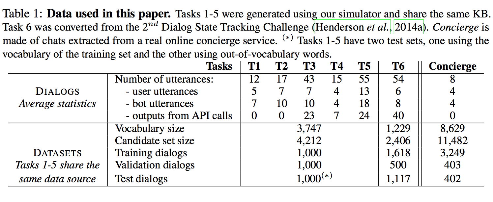
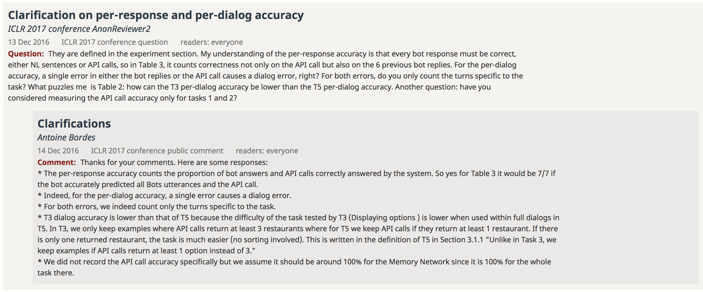

18-03-10 박성남
기존에 사용되었던 goal-oriented dialog system(명확한 task, 목표가 있는 dialog구축)은 해당 domain에 대한 많은 수작업이 필요했고, 이를 바로 다른 분야로 확장하기는 매우 힘듭니다. 수작업이 필요했던 문제를 해결한 것이 end-to-end dialog system입니다. 학습에 필요한 모든 것을 수작업 없이 dialog에서 직접 구했기 때문에 따로 handcrafting이 필요없었던 것이죠. 하지만 이 end-to-end dialog system은 open domain에 관련된 것이기 때문에 여기서 얻은 학문적 성과를 goal-oriented에 연결시키기엔 매우 어려웠습니다.(제가 이해하기로는 goal-oriented는 intent와 action이 필요해서인 것 같네요.) 이 논문에서는 앞으로 이 분야가 발전되기 위해서 goal-oriented tasks에서의 end-to-end dialog system을 적용했을 때의 장점과 단점을 분석하기 위한 시험 환경(a.k.a. test set)을 제안합니다.
제가 인턴을 하고 있는 분야는 여기서 non-goal-oriented(혹은 open domain) dialog system인데, 그 분야를 공부하기 시작한 입장에서 굉장히 재밌게 봤습니다.
여기서 제공하는 시험 환경에 대한 설명입니다. 딱히 이 분야를 풀고싶은 이유가 있는 것이 아니라, 기존의 goal-oriented 문제를 풀었던 모델들이 좋은 성능을 보여주었던 domain이기 때문입니다. 자세한 data에 대한 정보는 아래 표를 참고하세요.

레스토랑 예약 시뮬레이션
이걸 뭐 이렇게까지 설명할 이유가 있나 싶기는 하지만... 이론적으로 배우는 느낌보다는 시험 환경에 대한 디테일 제시입니다.
Dialog state tracking challenge
사람과 bot의 대화 내용을 추가했습니다. DSTC2 data를 사용했다고 하네요. Domain은 마찬가지로 레스토랑 예약입니다. user와 bot의 대화 + 그리고 각각에 사용됬던 API calls와 추가로 나누었던 대화가 포함되어 있습니다. 이를 Task 6로 표현했습니다.
Online concierge service
위의 표에 제시된 Task 1~5는 모두 같은 Knowledge Base(레스토랑 예약)와 관련된 과제들이고, Task 6은 Dialog state tracking challenge에서 제시된 과제입니다.
그런데 이 과제들은 더 현실적인 분야에서 잘 작동하냐는 보장이 없습니다. 따라서, Real online concierge service에서의 레스토랑 예약 대화 내용의 데이터를 추가했습니다. 모두 사람 간의 대화 내용을 script한 내용입니다.
자 느낌을 알아야합니다. 여기선 새로운 모델을 제시하지 않습니다. 그냥, 기존 모델들이 이 testbed(시험 환경)에서 어떤 점수를 기록하는지 확인합니다.
Q. Accuracy 계산?


이 논문은 앞으로의 시험 환경을 제시하기 위해 데이터셋을 공개했습니다. 그 이유는 다음과 같습니다.
근데, 음... 가볍게 읽기 좋았습니다ㅎㅎㅎ 모델 이론이 없어서 ㅋㅋㅋ 개꿀~!!!